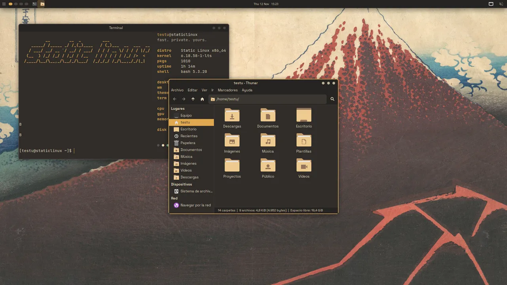
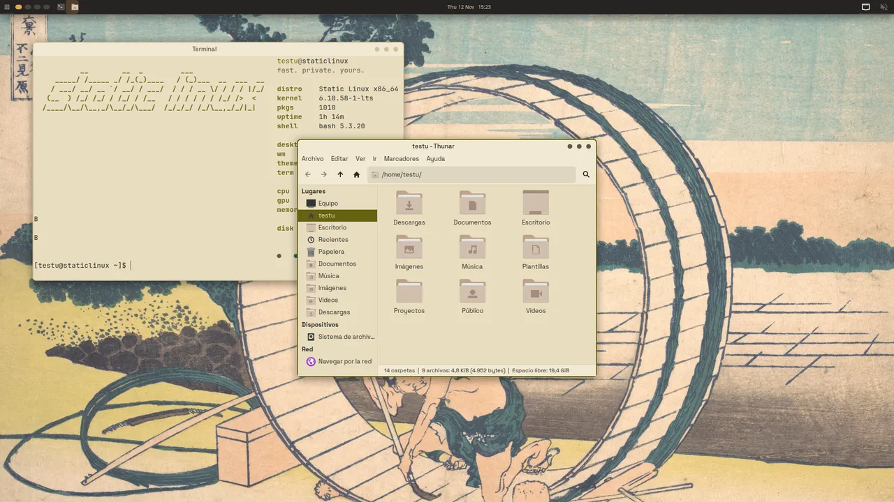
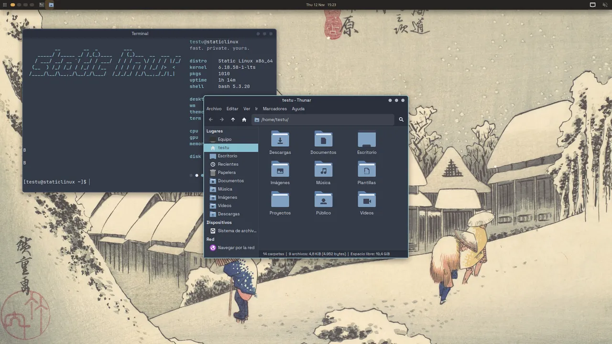
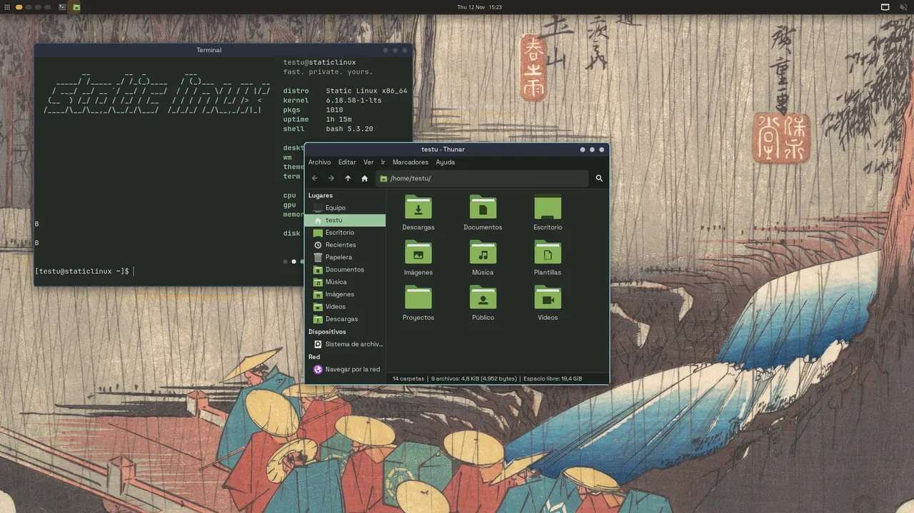
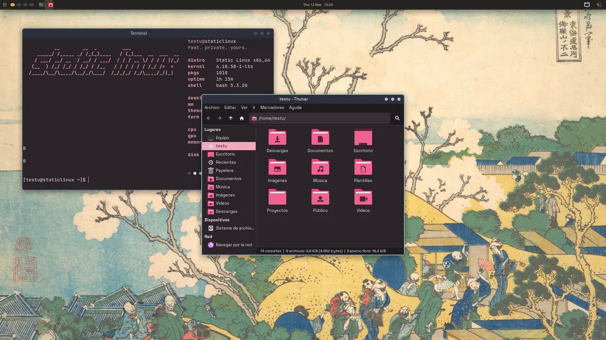
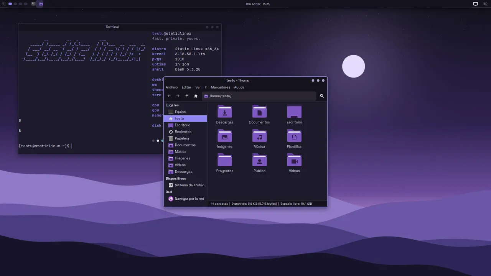
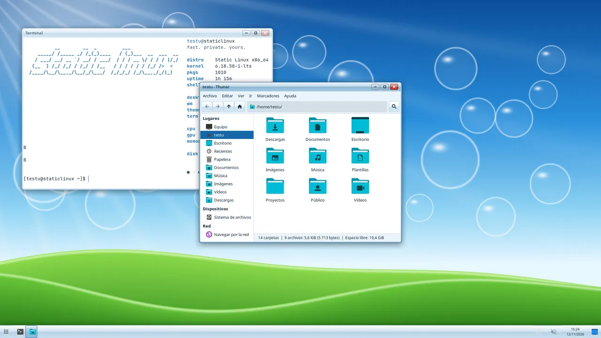
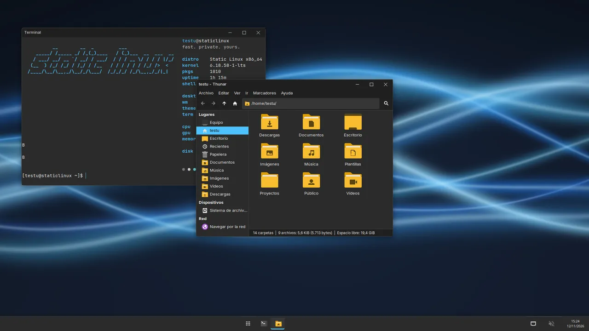
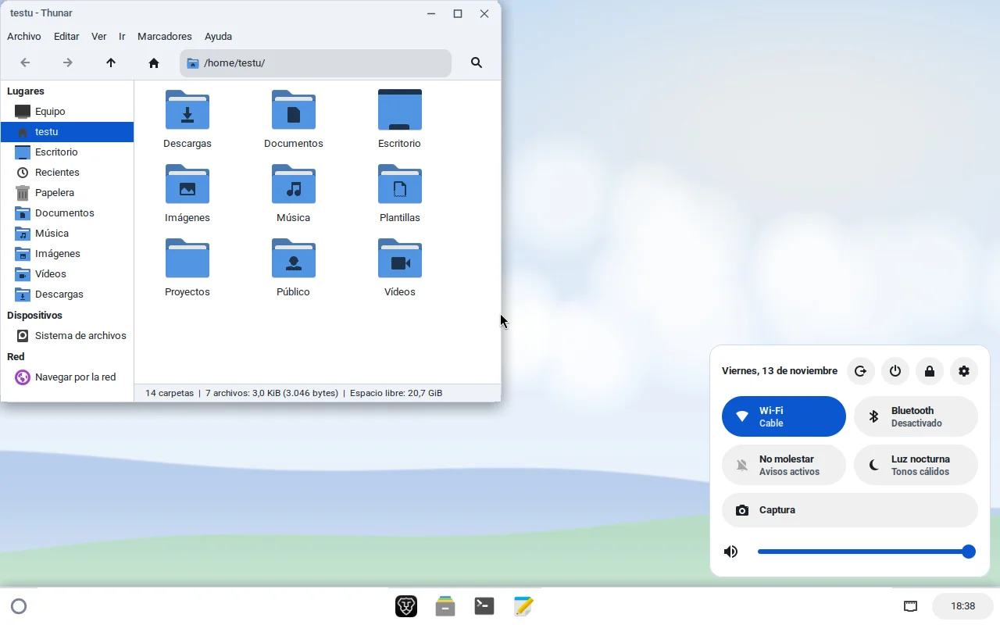

Temas y estilos¶
Un tema es un fondo de pantalla y la paleta que sale de él. Un estilo
es la forma del escritorio: ventanas, barra y controles. Cada tema trae su
estilo; sl-theme lo pinta todo a la vez. La dirección visual completa está
en DESIGN.md.
Estado (2026-11-13)
Los temas llegan a los nueve escritorios (XFCE, KDE Plasma, Hyprland, Openbox, GNOME, Cinnamon, i3, bspwm y sway) y al arranque: menú de GRUB, pantalla de carga (Plymouth) y pantalla de inicio de sesión (LightDM o SDDM). Todos se han visto arrancados con temas en la VM; los estilos (minimal, aero, ventanas, estante) solo dan forma a XFCE, el resto coge la paleta y el fondo.
Los nueve temas¶
| Tema | Modo | Estilo | Acento | Fondo | |
|---|---|---|---|---|---|
 |
Ámbar (por defecto) | oscuro | minimal | #E0A84F |
Hokusai, «Tormenta bajo el Fuji» (CC0) |
 |
Papel | claro | minimal | #666211 |
Hokusai, «Fujimigahara en Owari» (CC0) |
 |
Nórdico | oscuro | minimal | #88C0D0 |
Hiroshige, «Nieve al anochecer en Kanbara» (dominio público) |
 |
Bosque | oscuro | minimal | #9BC4A0 |
Hiroshige, «Lluvia de primavera en Tsuchiyama» (CC0) |
 |
Sakura | oscuro | minimal | #F2A7BC |
Hokusai, «El Fuji desde Gotenyama» (CC0) |
 |
Violeta | oscuro | minimal | #8F86F2 |
provisional, dibujado por código (GPL-3.0) |
 |
Aero | claro | aero | #1667A8 |
original, dibujado por código (GPL-3.0) |
 |
Ventanas | oscuro | ventanas | #4CC2FF |
original, dibujado por código (GPL-3.0) |
 |
Nube | claro | estante | #0B57D0 |
original, dibujado por código (GPL-3.0) |
Cada fondo lleva autor, licencia y cambios en branding/themes/<id>/CREDITS.
Los escaneos son de The Metropolitan Museum of Art (Open Access).
Los cuatro estilos¶
| Estilo | Ventanas | Barra | Fuente |
|---|---|---|---|
| minimal | borde de 2 px, botones como tres puntos | arriba, 30 px, escritorios como puntos y reloj al centro | Space Grotesk |
| aero | barra de título con brillo, botones cápsula, cerrar en rojo | abajo, 40 px con brillo; reloj con fecha y "mostrar escritorio" | Noto Sans |
| ventanas | plana, botones de 46 px ─ □ ✕ | abajo, 48 px, apps al centro, la activa subrayada | Inter |
| estante | alta y plana, esquinas de 12 px, círculo neutro al pasar el ratón (cerrar no se pone rojo) | abajo, 48 px: lanzador redondo con búsqueda y apps en cuadrícula, dock centrado, píldora de hora que abre los ajustes rápidos (sl-quick); avisos abajo a la derecha, escritorio sin iconos, Alt+[ / Alt+] / Alt+= para ajustar ventanas |
Roboto |
El brillo de aero son degradados sobre color sólido: ningún estilo usa transparencia. La barra solo se reescribe cuando cambia el estilo; un cambio de paleta dentro del mismo estilo respeta los retoques que hayas hecho en tu panel.
Dónde se elige¶
- Instalador: página Tema, con capturas reales de los ocho.
- sl-welcome: pestaña Apariencia.
- Terminal:
sl-ctl theme --list # temas y cuál está activo
sl-ctl theme aero # aplicar al usuario actual
sudo sl-ctl theme aero # y además inicio de sesión, GRUB y arranque
sl-theme --current # id del tema activo
sudo sl-theme ambar --skel # pintar /etc/skel (build de la ISO)
sudo sl-theme ambar --system # solo inicio de sesión, GRUB y Plymouth
Qué toca sl-theme¶
Todo sale de branding/themes/<id>/theme.conf y de las plantillas de
branding/themes/templates/ (la lista exacta está en templates/MANIFEST):
- GTK 3 y 4 (
~/.config/gtk-{3,4}.0/gtk.css) sobre adw-gtk3: las apps libadwaita, sl-welcome incluida, heredan la paleta. - Tema de ventanas xfwm4
StaticLinux, dibujado píxel a píxel con antialias porxfwm4.pysegún el estilo. - Iconos Papirus con carpetas del color del tema (
icons.py). - xsettings (tema, fuente, iconos, botones de ventana) y el panel de XFCE.
- Terminal (xfce4-terminal, kitty, LXTerminal y Konsole), fastfetch y cava.
- El fondo de pantalla.
Cada fila de MANIFEST puede nombrar un programa: ese archivo solo se
escribe si el programa está instalado. Así una sola orden pinta el entorno
que tengas:
| Entorno | Qué recibe |
|---|---|
| XFCE | xfwm4, panel, xfce4-terminal, fondo por xfconf |
| KDE Plasma | esquema de color StaticLinux (también dentro de kdeglobals), Konsole, fondo |
| Hyprland | bordes y redondeo (~/.config/hypr/theme.lua), hyprpaper, hyprlock, barra de Astal, dunst |
| Openbox | tema de ventanas StaticLinux, tint2, jgmenu, dunst, LXTerminal, fondo con feh |
| GNOME | modo claro/oscuro, acento (el más cercano de GNOME), tema GTK, iconos, fuentes y fondo por gsettings |
| Cinnamon | lo mismo que GNOME, más un tema de panel StaticLinux generado desde la paleta |
| i3 | bordes, huecos, i3bar + i3status, rofi, dunst/mako, fondo con feh |
| bspwm | bordes (bspc config), polybar, rofi, fondo con feh |
| sway | bordes, fondo (output * bg), waybar, rofi, mako |
GNOME y Cinnamon guardan sus ajustes en dconf: sin sesión abierta (y con
--skel), sl-theme los escribe con dbus-run-session directamente en
~/.config/dconf/user.
Con --system (como root) pinta lo que es de toda la máquina, con copia de
lo que sustituye en /var/backups/static-linux/theme/<fecha>/:
- Inicio de sesión: LightDM con el fondo del tema y un tema GTK propio
(
StaticLinux-Greeter); en SDDM, el fondo de Breeze. - GRUB: tema en
/boot/grub/themes/static-linuxcon el fondo atenuado, menú del color del tema y fuentes Space Grotesk y Outfit. - Plymouth: fondo atenuado, la marca de Static Forge, barra del color de acento y la petición de contraseña de LUKS. Regenera el initramfs.
Tus reglas propias van en ~/.config/gtk-{3,4}.0/gtk-custom.css, que
sl-theme crea vacío y nunca sobrescribe. Todo lo que sobrescribe se copia
antes a ~/.local/state/static-linux/theme-backup/<fecha>/.
Con la sesión abierta, sl-theme avisa a lo que esté corriendo: el panel
de XFCE se reconstruye al cambiar de estilo, Openbox, tint2 y dunst recargan,
Hyprland recarga y relanza hyprpaper (o swaybg), Plasma aplica el esquema y
el fondo, GNOME y Cinnamon cambian al momento por gsettings, i3 y sway
recargan, bspwm repinta los bordes, y polybar, waybar y mako se reinician.
Las apps que ya estaban abiertas cambian al reabrirlas.
Hacer un tema¶
# branding/themes/<id>/theme.conf
name=Mi tema
mode=dark # dark | light
style=minimal # minimal | aero | ventanas | estante (opcional, minimal si falta)
font_ui=Inter # opcional, Space Grotesk si falta
folders=yellow # opcional, color de carpetas de Papirus
bg=262321 # fondo de ventana
surface=302C29 # campos, terminal, filas
line=4A443F # bordes
text=EBDDBF
text_dim=BFB29A
accent=E0A84F
accent_fg=262321 # texto sobre el acento
danger=EB6F68
warning=D8A657
term=... # 8 colores de terminal
term_bright=... # 8 colores brillantes
Al lado, wallpaper.jpg (3840×2160), preview.jpg (320×180) y CREDITS.
previews/<escritorio>.jpg (320×180) son las capturas de ese tema en KDE,
GNOME, Cinnamon, Hyprland, Sway, i3, bspwm y Openbox; sl-welcome usa la del
escritorio en el que estás (por XDG_CURRENT_DESKTOP) y, si no la hay,
preview.jpg, que es la de XFCE.
branding/themes/check.py comprueba el contraste AA de texto y terminal: un
tema que falla no entra en la ISO. Los fondos originales se generan con
branding/themes/gen_wallpaper.py.
Identidad de marca¶
Void: #0B0C10 (fondo principal)
Signal Green: #00C8A0 (acento de marca)
Amber: #F5A623 (ISO offline, avisos)
Tipografías (SIL OFL): Outfit 700 para titulares, GRUB y logotipo; Space Grotesk para interfaz; JetBrains Mono para terminal y código.
Los acentos de antes¶
branding/accents/apply.sh y sus diez acentos siguen en el repo para
sl-ctl accent y el resumen de sl-welcome, pero ni el instalador ni los
entornos los usan ya: todo pasa por sl-theme.